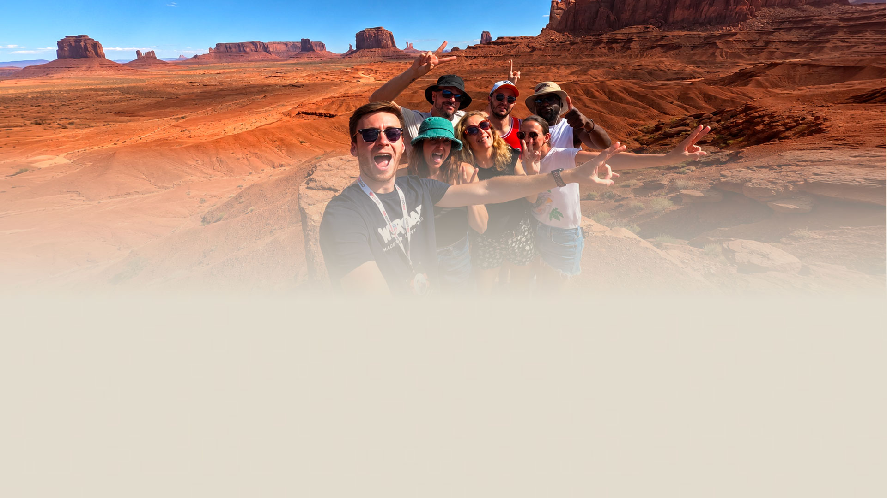

Come stanno cambiando le relazioni oggi? _16.1Edizione 02Maggio 2026
Nel 2026 conoscere persone nuove è diventato più
difficile. Ma la voglia di incontrarsi non è sparita.
Stanno cambiando i luoghi, i modi e i contesti in cui nascono le relazioni. La seconda edizione
dell'Osservatorio WeRoad parte da qui.
Inizia la lettura
5.000 rispondenti · 5 paesi
01Il contesto
Conoscere qualcuno è diventata
un'impresa.
0%
dice che conoscere nuove persone è più difficile rispetto al passato
+8 vs 2025
0%
non è soddisfatto delle proprie relazioni sociali
0%
non trova abbastanza occasioni nella vita di tutti i giorni
Le
persone
vogliono conoscersi. Ma non riescono. Perché?
47%
Poche opportunità
33%
Mancanza di tempo
25%
Non so da dove iniziare
21%
Ansia sociale
Non è un fenomeno nuovo, ma è in crescita. Secondo l' (2025), solo l'11% delle
persone in Europa vede amici di persona ogni giorno. E secondo il , il 19% dei giovani adulti nel mondo non ha nessuno su cui
contare, un dato in
crescita costante dal 14% del 2006.
Lo vediamo anche nel nostro Osservatorio. Alla domanda "tra le 10 persone più importanti della tua
vita,
quante le conosci da sempre?", il 41% ha risposto solo
1-3. Solo il
20% ha una rete di relazioni profonde che viene dal
passato.
02Un fenomeno trasversale
La solitudine non dipende da dove
vivi.
La solitudine non è un problema di chi vive in posti isolati. nel 2025 le ha dedicato un report intero, definendola una
priorità
globale di salute pubblica.
Chi si sente solo, dove vive?
🏙
Metropoli (oltre 1M ab.)
23%
🌆
Grande città (250k–1M)
16%
🏘
Città media (50k–250k)
19%
🌉
Piccola città (10k–50k)
20%
🏡
Paese o piccolo centro (<10k)
21%
Una persona su sei nel mondo è colpita dalla solitudine.
Lo dice l'Organizzazione Mondiale della Sanità. Quello che emerge dal nostro
sondaggio
conferma lo stesso quadro: le persone che vivono in contesti molto diversi tra loro
riportano le stesse
difficoltà.
1/6
persone colpite dalla solitudine nel mondo
· 2025
871k
decessi/anno legati all'isolamento
· 2025
Se le occasioni per conoscersi diminuiscono, una delle ragioni è che stanno sparendo anche i luoghi
dove
succedeva. I cosiddetti "third places": pub, caffè, centri comunitari, tutti quegli spazi che non
sono né casa
né lavoro e dove le persone si incontravano senza doverlo programmare. Ne parla tra gli altri
, professore
alla NYU, nella sua
newsletter No Mercy / No Malice.
Le persone quindi stanno cercando alternative.
0%
sente il bisogno di far parte di un gruppo legato a passioni e interessi.
0%
considera importante conoscere nuove persone quando viaggia.
I vecchi luoghi di incontro spariscono, ma le persone non hanno smesso di cercare posti dove sentirsi
parte
di qualcosa. Quello che cambia è dove lo trovano: non più nei bar o nei circoli, ma negli spazi dove
ci si
ritrova intorno a qualcosa di condiviso, che sia una passione, un viaggio o una cena con persone che
non si
conoscono ancora.
Kindred
Le relazioni più importanti raramente nascono online. Nascono
davanti a un
piatto condiviso, in una conversazione spontanea, quando un amico ti presenta qualcuno al bar,
in palestra o
a una mostra. Quando sei fisicamente presente con le persone, le difese si abbassano e la
fiducia si
costruisce in modo naturale e più veloce. Siamo fatti per accogliere e per sentirci parte di
qualcosa, ma la
vita moderna ci ha allontanato da questo istinto, ottimizzando tutto per l'efficienza e la
comodità. Quello
che le persone cercano oggi non sono più contenuti. È qualcuno con cui stare. In Kindred lo
vediamo ogni
giorno attraverso le storie dei nostri membri: dai alle persone il contesto giusto e la
community non ha
bisogno di essere costruita. Succede da sola.
Justine Palefsky — CEO e Co-founder, Kindred
03Nuovi modi per incontrarsi
Un tempo c'erano le app. Adesso le persone vogliono incontrarsi nella vita reale.
sente che costruire relazioni che contano è più difficile di prima.
0%
vuole più esperienze sociali offline. +0,32
vs 2025
· Fourth Spaces · 2025
Eventbrite nel 2025 ha chiamato questo fenomeno "Fourth Spaces": il
95%
dei giovani adulti vuole portare nella vita reale gli interessi che coltiva online.
L'84% ha
trovato amici veri attraverso eventi dal vivo.
04Relazioni in viaggio
In viaggiosuccede qualcosa
0%
si sente più aperto verso gli altri quando viaggia.
0%
ha costruito un legame vero con qualcuno conosciuto in viaggio.
0%
vede il viaggio come risposta al senso di isolamento.
0%
giudica le relazioni nate in viaggio più vere di quelle di tutti i giorni.
· Travel Trends 2026
Secondo Skyscanner nel report Travel Trends 2026, il
39% dei
viaggiatori ha considerato di andare all'estero
specificamente per incontrare nuove persone. Tra i Gen Z, la percentuale sale al
55%.
In viaggio conta il tempo passato insieme e quello che si fa con quel
tempo.
+59% di prenotazioni workshop anno su anno. Il 76% dei viaggiatori
dice che
imparare qualcosa in vacanza è più interessante che mai.
GetYourGuide
Oggi viaggiare significa creare relazioni vere, non semplicemente
spuntare
luoghi da una lista. E lo vediamo soprattutto nei momenti in cui le persone fanno qualcosa
insieme:
impastare il pane, imparare un mestiere, condividere una tavola, scambiarsi storie con una guida
locale. È
anche per questo che i workshop sono una delle categorie che stanno crescendo più velocemente su
GetYourGuide: le prenotazioni sono aumentate del 59% anno su anno. Le esperienze non servono
solo a
mostrarti un posto. Ti danno un motivo per parlare, ridere, metterti in gioco e sentirti parte
di qualcosa,
anche solo per un pomeriggio.
Ma
le relazioni che nascono in viaggio non si esauriscono al
rientro.
Per molti durano nel tempo, proprio
perché partono da qualcosa di vissuto e condiviso, non da un profilo o da un match. Chi ha diviso un
posto, un
momento, un pezzo di viaggio con qualcuno, spesso ci resta legato molto più a lungo di quanto si
aspettasse.
È lo stesso concetto che Fabio Bin, co-founder e CMO di
WeRoad, ha
scritto su a marzo
2026 riguardo
a quello che facciamo in WeRoad:
WeRoad
Abbiamo sempre pensato di occuparci di viaggi, ma in realtà
rispondiamo a un bisogno molto più umano. Quello che conta non è dove vai, ma chi incontri lungo
la strada. Quando metti insieme 15 sconosciuti per dieci giorni, lontani dalla propria routine,
le difese si abbassano molto più in fretta di quanto succeda nella vita quotidiana.
Fabio Bin — Co-founder & CMO, WeRoad

05Ricerca qualitativa — SXSW
Austin, Texas · SXSW · Marzo 2026
Che ne pensa un gruppo di americani?
Durante il SXSW 2026 ad Austin abbiamo condotto un focus group con 15 americani tra i 20 e i 30 anni.
Non una
ricerca scientifica, ma una conversazione aperta con persone di background diversi per capire se quello
che i
numeri europei ci stavano raccontando avesse riscontro anche dall'altra parte dell'oceano.
È facile collezionare amici lungo la strada, ma crescendo preferisci incontrare persone
con cui
condividi passioni e interessi.
Emily, 28 · SXSW Focus Group ·
Austin, TX
C'è una differenza tra conoscere qualcuno e costruirci un rapporto vero. Spesso le cose
restano
in superficie.
Alex, 32 · SXSW Focus Group · Austin,
TX
Le persone sono molto più aperte a mettersi in gioco di quanto pensiamo. La differenza
la fa il
contesto: il momento in cui passi da "chi sono queste persone?" a "ok, qui posso stare bene".
Ryan, 30 · SXSW Focus Group ·
Austin, TX
06Ricerca qualitativa — Community
Storie dalla community.
Abbiamo chiesto a sei persone della nostra community di raccontare la propria esperienza e come il
viaggio ha
avuto un impatto sulla loro vita e sulle loro relazioni. Clicca
su una card per leggere la storia completa.
Anna Harvey
Anna ha 31 anni, è inglese, lavora come copywriter e si definisce
fortemente
introversa. Non ha mai amato particolarmente stare in mezzo alla gente. Nonostante
questo,
ha deciso di
mettersi alla prova con un viaggio di gruppo in Nepal.
In viaggio di gruppo, si passa dal "performativo" all'"umano" nel
giro di pochi
giorni. Le etichette svaniscono — e quello che resta sono le persone.
leggi di più →
Anna Harvey
Anna ha 31 anni, è inglese, lavora come copywriter e si definisce
fortemente introversa. Non ha mai amato particolarmente stare in mezzo alla gente.
Nonostante questo, ha deciso di mettersi alla prova con un viaggio di gruppo in Nepal.
"In generale non mi piacciono molto le persone. Quando la mia batteria sociale si scarica,
tendo a
dissociarmi velocemente. Ma ho scoperto che il contesto intimo di un viaggio di gruppo
accelera tutto. Si
passa dal 'performativo' all''umano' nel giro di pochi giorni. Le etichette svaniscono. A un
certo punto
ti accorgi che quello palestrato ha il tuo stesso humour e che il medico del gruppo è
ossessionato dai
caffè hipster quanto te. Alla fine siamo tutti ventenni, trentenni, quarantenni che cercano
di orientarsi
in questo mondo un po' assurdo. È stata la prova che anche chi tende a evitare le persone
può trovare il
proprio posto nel contesto giusto. Siamo ancora in contatto nonostante viviamo dall'altra
parte del mondo.
E la cosa più bella è che quando ci rivediamo sembra non sia passato nemmeno un giorno."
Alicia Bailac
Alicia ha 39 anni, è spagnola, lavora come assistente di direzione ed
è
coordinatrice. Curiosa per natura ma frenata dalle paure, dopo essere stata ghostata
prima
di un viaggio ha deciso di partire lo stesso.
Mi ha ghostato prima del viaggio. Ho prenotato lo stesso, da
sola, in
Giordania —
e ho trovato persone che mi hanno spinta oltre ogni limite che pensavo di avere.
leggi di più →
Alicia Bailac
Alicia ha 39 anni, è spagnola, lavora come assistente di direzione
ed è coordinatrice. Curiosa per natura ma frenata dalle paure, dopo essere stata ghostata
prima di un viaggio ha deciso di partire lo stesso.
"Dovevo partire con il mio ex. Mi ha ghostato. Non avevo nessuno con cui andare, ma ho
deciso che non
sarei rimasta a casa a piangere. Ho prenotato un viaggio di gruppo in Giordania, un posto di
cui non
sapevo nulla. Avevo paura delle altezze, delle immersioni, del canyoning, praticamente di
tutto. Ma quando
sei circondata da persone che non ti conoscono, che non hanno idee preconcette su chi sei o
su cosa non
riesci a fare, qualcosa cambia. Si sono fermati ad aspettarmi, mi hanno incoraggiata, mi
hanno supportata.
Nessun giudizio, solo persone che si spingevano avanti a vicenda. E a un certo punto ho
pensato: sì, ce la
posso fare. Quell'esperienza mi ha fatto venire voglia di essere io la persona che aiuta gli
altri a fare
lo stesso percorso, ed è per questo che sono diventata coordinatrice. I miei migliori amici
oggi vengono
da questo mondo, sia coordinatori che viaggiatori. Solo dal mio primo viaggio sono nate due
coppie che
stanno ancora insieme, da più di tre anni."
Manuel Ortega Sánchez
Manuel ha 35 anni, è di Siviglia, lavora come ingegnere aeronautico
ed è
coordinatore. Ha fatto il suo primo viaggio di gruppo dopo la pandemia e ha trovato
anche la
sua compagna,
con cui si sposerà l'anno prossimo.
In viaggio vedi una persona in molte situazioni diverse, in modo
naturale, senza
pressione. Così ho conosciuto Sheila — ci sposiamo l'anno prossimo.
leggi di più →
Manuel Ortega Sánchez
Manuel ha 35 anni, è di Siviglia, lavora come ingegnere aeronautico
ed è coordinatore. Ha fatto il suo primo viaggio di gruppo dopo la pandemia e ha trovato
anche la sua compagna, con cui si sposerà l'anno prossimo.
"Dopo il Covid nessuno dei miei amici voleva viaggiare. Così ho prenotato un viaggio in
Messico senza
conoscere nessuno. Il primo giorno pensavo 'ma che ci faccio qui?'. Due giorni dopo pensavo
'è la cosa più
bella che ho fatto negli ultimi anni'. Poi è arrivata la Giordania. E Sheila. Abbiamo
iniziato a parlare
perché durante un gioco di presentazione lei ha detto che voleva andare in Australia, e per
me quel paese
era stata l'esperienza più bella della mia vita. Da lì, giorno dopo giorno, abbiamo
continuato a
conoscerci. Durante i trasferimenti, durante le attività, durante le notti nel deserto.
Niente di forzato.
In un viaggio vedi un'altra persona in tante situazioni diverse, in modo naturale, senza
pressione. La
conosci dal di dentro. Questo non succede su un'app, dove si parte sempre con le stesse
domande e tutto
sembra un po' costruito. Se non l'avessi incontrata in quel viaggio, probabilmente non
staremmo insieme.
Ci sposiamo l'anno prossimo."
Simon Serp
Simon ha 28 anni, è francese, lavorava come fisioterapista in
Svizzera.
Guadagnava
bene, la vita sembrava perfetta vista da fuori. Ma non lo era. Ha lasciato tutto per
viaggiare ed è
diventato coordinatore.
Le connessioni più forti non sono nate durante i tramonti a Bali.
Sono nate su un
bus di 15 ore sulle Ande, quando nessuno stava cercando di impressionare qualcuno.
leggi di più →
Simon Serp
Simon ha 28 anni, è francese, lavorava come fisioterapista in
Svizzera. Guadagnava bene, la vita sembrava perfetta vista da fuori. Ma non lo era. Ha
lasciato tutto per viaggiare ed è diventato coordinatore.
"Avevo un lavoro ben pagato, di quelli che dall'esterno sembrano perfetti. Ma non ero
soddisfatto. Sentivo
di voler fare qualcosa di diverso, qualcosa di più grande. Un giorno ho preso una decisione:
ho lasciato
il lavoro e sono partito senza sapere quando sarei tornato. Non avevo soldi da parte. Avevo
dei debiti. Ma
ero determinato. Quello che ho trovato nel viaggio non era una fuga dal lavoro. Era
prospettiva. Era la
possibilità di stare davvero nel presente, una cosa che prima mi mancava. Le connessioni più
forti non
sono nate durante i tramonti a Bali. Sono nate dopo 8 ore di trekking in Patagonia, su un
bus notturno di
15 ore sulle Ande, in una conversazione casuale in un villaggio del Nepal. Quando le persone
sono stanche
e non stanno cercando di impressionare nessuno, le barriere emotive cadono. È lì che nasce
qualcosa di
vero. Ho avuto anche la fortuna di incontrare l'amore della mia vita in Thailandia, su
un'isola piccola
che sembrava uscita da un racconto."
Eileen Wegner
Eileen ha 36 anni, vive a Berlino, lavora come podcaster e video
editor,
e cresce suo
figlio da sola. Per anni le sue uniche avventure erano quelle dei videogiochi. Poi ha
scoperto i viaggi di
gruppo.
Per anni le mie uniche avventure erano su uno schermo. Poi ho
scoperto che fuori
c'era qualcosa di più reale — e un gruppo con cui viverlo davvero.
leggi di più →
Eileen Wegner
Eileen ha 36 anni, vive a Berlino, lavora come podcaster e video
editor, e cresce suo figlio da sola. Per anni le sue uniche avventure erano quelle dei
videogiochi. Poi ha scoperto i viaggi di gruppo.
"Per anni le uniche avventure che conoscevo erano su uno schermo. Esploravo le piramidi con
Lara Croft,
scoprivo templi con Nathan Drake, viaggiavo su altri pianeti con Master Chief. Viaggiare non
faceva parte
della mia realtà. Crescevo mio figlio, lavoravo, stavo a casa. Poi ho iniziato a correre e
ho incontrato
persone che stavano vivendo davvero le cose che io avevo solo sperimentato attraverso una
console. È stato
allora che ho deciso di cambiare tutto. Nuova casa, nuovo lavoro, nuove priorità. Per me e
per mio figlio.
Ho fatto il mio primo viaggio di gruppo in Messico perché non avevo il coraggio di partire
da sola. Mi
serviva una rete di sicurezza. Ed è stato incredibile. Ho paura dell'altezza, ma nei viaggi
mi sono
buttata da una scogliera di 9 metri in Messico, mi sono lanciata in un canyon in Sudafrica,
ho fatto
parapendio a Lima. Mai da sola. Sempre con il mio gruppo. Spesso mi dicono 'non l'avrei mai
fatto senza di
te' e la mia risposta è sempre 'nemmeno io senza di voi'. È questo che crea legami che
durano oltre il
viaggio. Alcuni di loro sono diventati amici veri. La community riempie un vuoto nella mia
vita che la
routine quotidiana non riesce a riempire. Mio figlio la appoggia in pieno e mi aiuta anche a
preparare i
bagagli."
Daniela D'Attolico
Daniela ha 30 anni, lavora per un'azienda di mobilità a Bolzano, è
abituata a turni
imprevedibili e ha passato anni a rimandare prima di fare il grande passo — dopo che la
sua
psicologa l'ha
incoraggiata a provare.
Essere in un gruppo dove nessuno ti conosce significa nessuna
paura
di essere
giudicata. Quando sono tornata, ho raccontato alla mia psicologa con le lacrime agli
occhi.
leggi di più →
Daniela D'Attolico
Daniela ha 30 anni, lavora per un'azienda di mobilità a Bolzano, è
abituata a turni imprevedibili e ha passato anni a rimandare prima di fare il grande passo —
dopo che la sua psicologa l'ha incoraggiata a provare.
"I miei turni rendono quasi impossibile incastrare i tempi con gli amici. Sapevo dei viaggi
di gruppo da
anni ma continuavo a rimandare per paura. Ho aspettato tre, quattro anni. Quando finalmente
sono andata in
Norvegia, qualcosa è cambiato. Essere in un gruppo dove nessuno ti conosce significa nessuna
paura di
essere giudicata. Trovi il coraggio di fare cose che da sola non faresti. Se potessi tornare
indietro, lo
farei prima, perché non ci sono veri motivi per sentirsi in ansia o avere paura. Quando sono
tornata, ho
raccontato del viaggio alla mia psicologa con le lacrime agli occhi. Era stupita. Non si
aspettava che mi
buttassi nelle attività di gruppo così liberamente. Era molto contenta, forse anche più di
me. Stavo
attraversando un periodo difficile e quel viaggio mi ha dato forza e la voglia di continuare
a sperare in
un futuro migliore. Parlo ancora con i miei compagni di viaggio. Abbiamo un gruppo WhatsApp
e con alcuni
ci mandiamo reel stupidi su Instagram."
07Conclusione
Cosa emerge davvero da questa ricerca.
Le persone non hanno smesso di cercarsi.
Se dovessimo riassumere tutto quello che abbiamo raccolto in questi mesi, probabilmente partiremo da
qui: le
persone non hanno smesso di cercarsi. Stanno semplicemente cambiando i luoghi, i modi e i contesti in
cui
succede.
E questi sono i dati che, più di tutti, raccontano quello che sta
succedendo.
Il 0% delle persone dice che conoscere
qualcuno di
nuovo oggi è più difficile rispetto al passato. Un dato in crescita di 8 punti in
un anno.
Il viaggio è diventato il contesto numero uno in cui le persone sentono di conoscere meglio gli
altri: 0%, contro il 30% del 2025.
App e social restano ultimi nella classifica dei luoghi dove nascono relazioni significative: solo
il 0% li considera efficaci.
Il 0% degli intervistati vorrebbe vivere
più
esperienze sociali offline.
Il 0% sente il bisogno di appartenere a un
gruppo
costruito intorno a passioni e interessi comuni.
Il 0% non è soddisfatto delle proprie
relazioni
sociali.
L'0% dice di sentirsi più aperto verso gli
altri
quando viaggia.
Due persone su tre hanno costruito un legame importante con
qualcuno conosciuto durante un
viaggio.
Per il 0% ciò che crea connessione sono
soprattutto
le esperienze vissute insieme, non semplicemente il tempo passato nello stesso posto.
La voglia di incontrarsi non è mai sparita. Quello che mancano
sempre di più
sono i contesti giusti
perché
succeda, ed è qui che il viaggio, per molte persone, sta iniziando a fare la differenza.